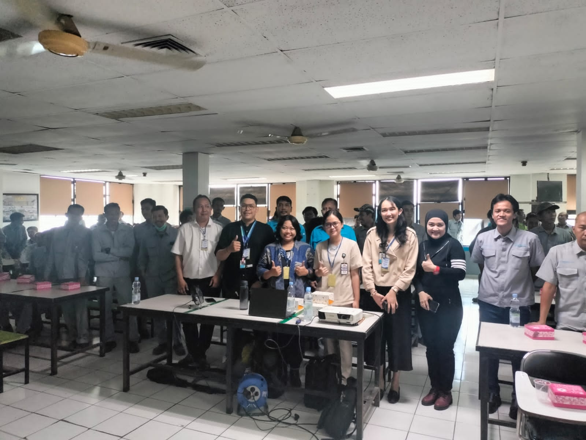

Health Talk in Cikarang: A Focus on Diabetes Mellitus and Cholesterol
GWS Medika (Member of Sinar Mas Group)
• This health talk was held at PT CHUBB Safes Indonesia in collaboration with GWS Medika, and nearly 250 employees from PT CHUBB participated in this event.
• The health talk started with a 30-minute presentation about diabetes mellitus and cholesterol, which included its definition, risk factors, foods that worsen the condition, and health suggestions. During the presentation, the participants were actively listening and enthusiastic about the topic.
• This event was highlighted by massive interaction between speaker and participants, while participants were eager to ask questions about various critical topics ranging from the complications associated with diabetes mellitus, recognizing symptoms of diabetes mellitus and high cholesterol, and understanding the link between high cholesterol and coronary heart diseases and ischemic stroke.
• This enthusiasm and curiosity underscored the importance of such discussions in fostering health awareness and preventative care. It was a rewarding experience to see the audience so invested in these topics and eager to learn more.
Gallery
